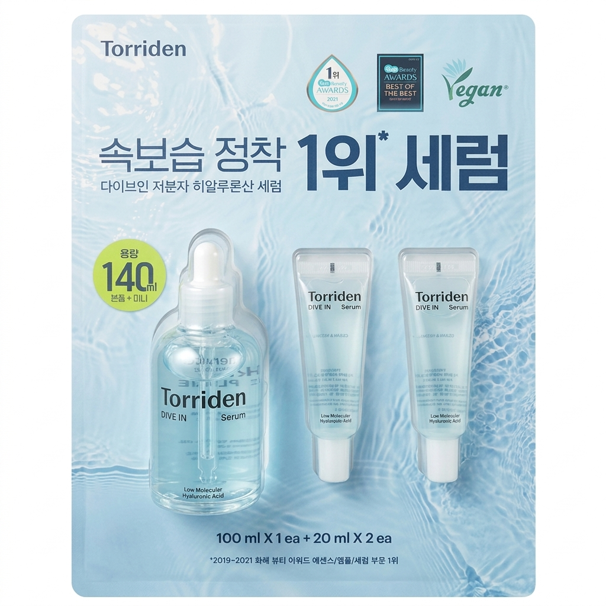
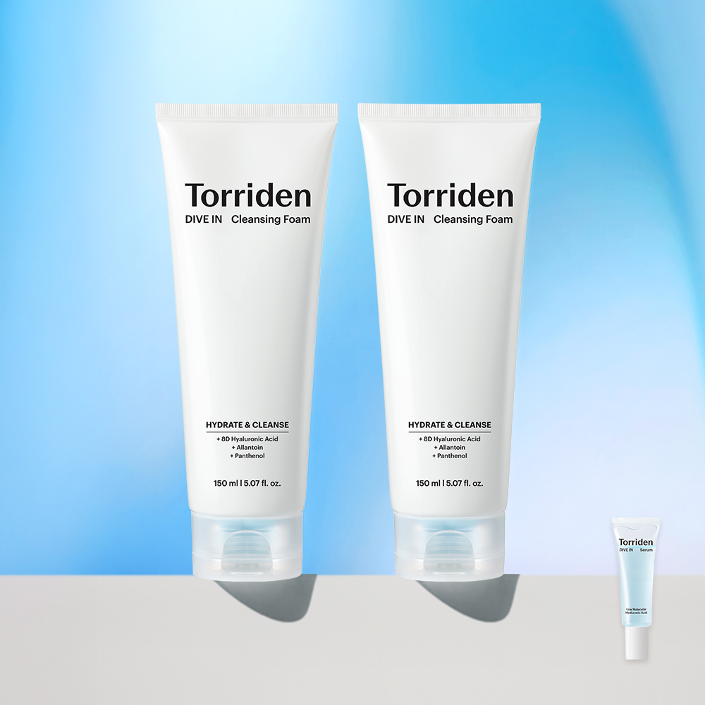
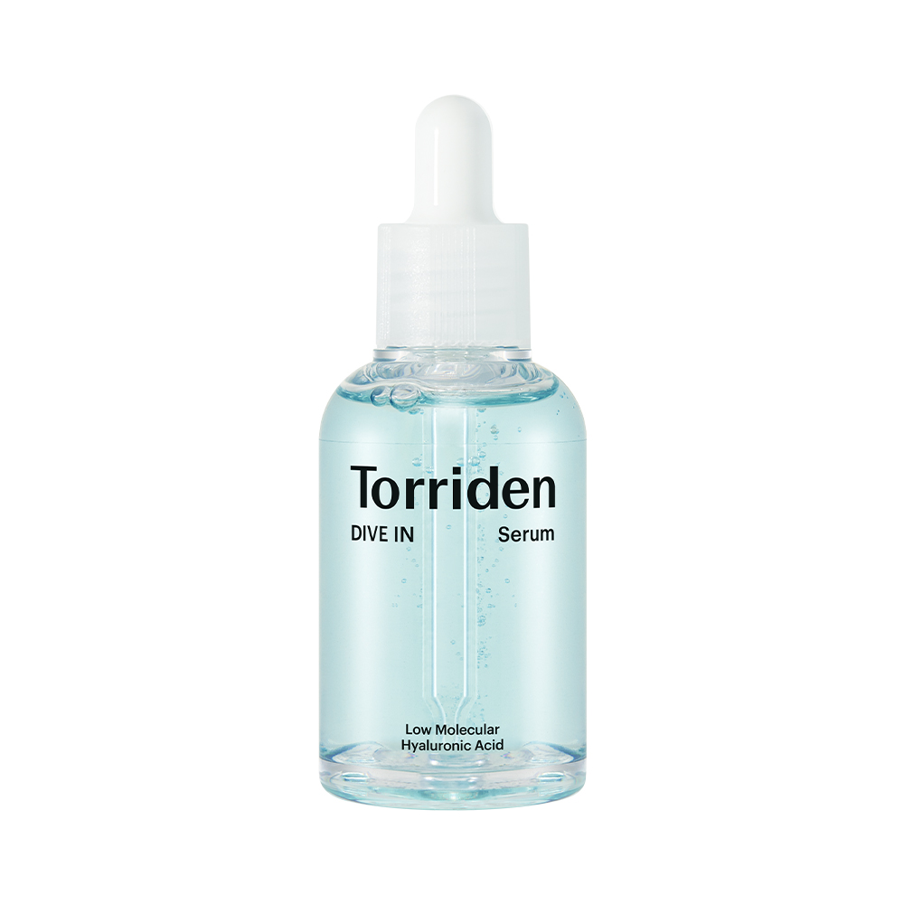
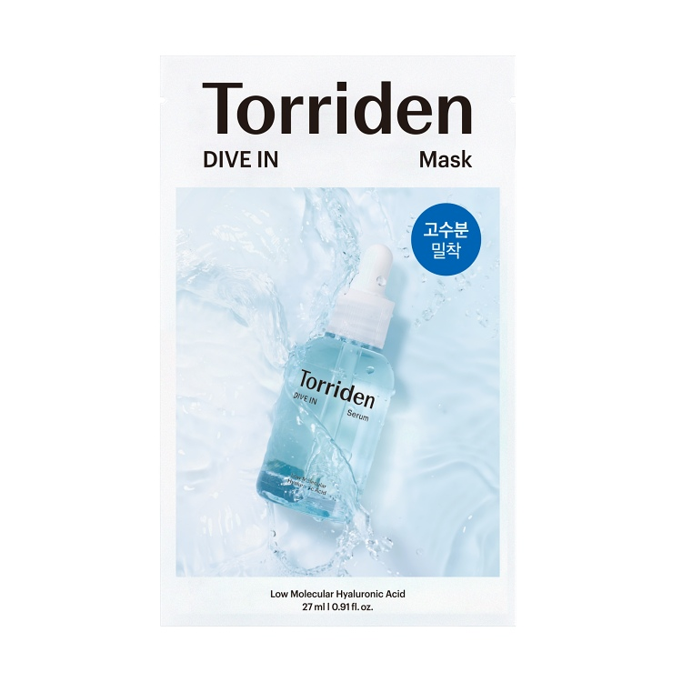
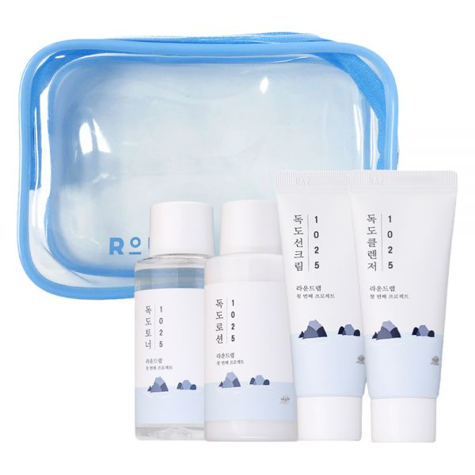

HiddenFindsDaily
Honest Korean skincare picks for glass skin
Honest, first-person picks of cult-favorite Korean skincare — serums, sunscreens, toners and more you can buy worldwide.

Korean Serum
6 Best Korean Serums for Glass Skin (2026)
My go-to Kbeauty faves

Korean Sunscreen
6 Best Korean Sunscreens for Glass Skin (2026)
Korean skincare worth the hype

Korean Toner
6 Best Korean Toners for Glass Skin (2026)
Korean skincare worth trying

Korean Cleanser
6 Best Korean Cleansers for Glass Skin (2026)
Korean skincare worth the hype

Korean Essence
6 Best Korean Essences for Glass Skin (2026)
Korean skincare I love

Korean Cushion
6 Best Korean Cushions for Glass Skin (2026)
Korean skincare worth trying

Korean Sheet Mask
6 Best Korean Sheet Masks for Glass Skin (2026)
Korean skincare worth trying

Korean Lip Tint
6 Best Korean Lip Tints for Glass Skin (2026)
K beauty must haves